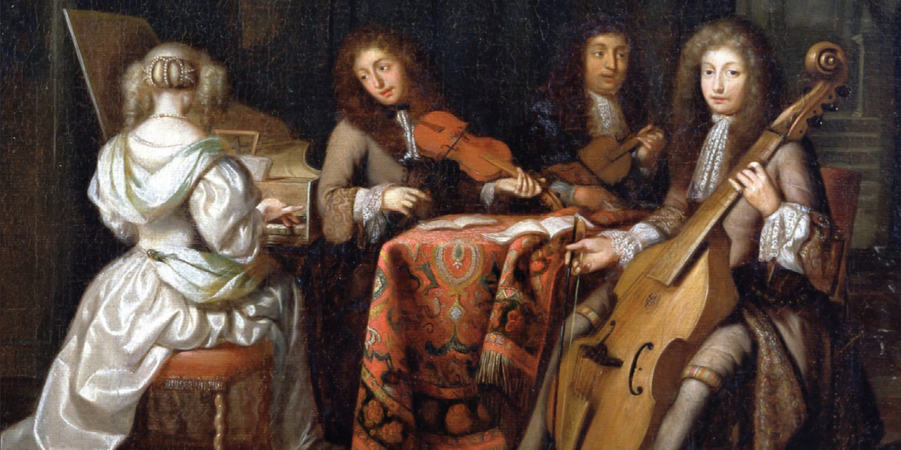
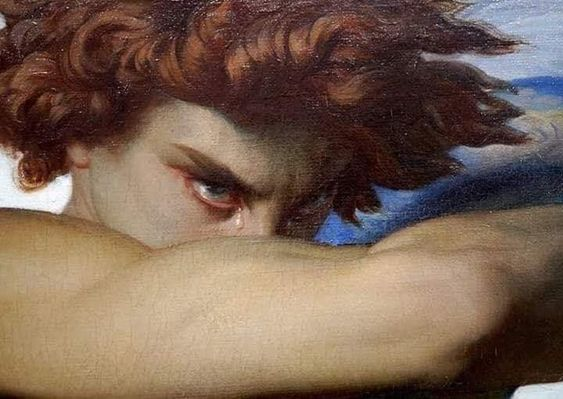
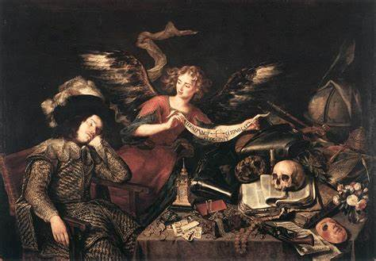
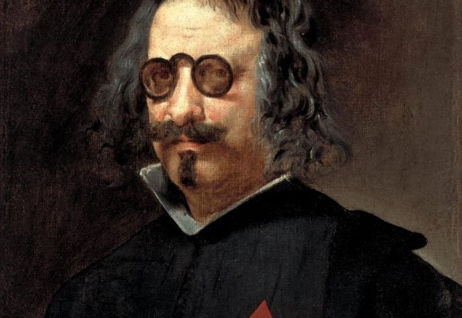

Introducción
El Barroco fue un período de gran producción artística que abarcó desde finales del siglo XVI hasta principios del siglo XVIII. Se caracterizó por su exuberancia, complejidad y dinamismo.
Arte Barroco
El arte barroco se destaca por su atención al detalle, el uso dramático de la luz y la sombra, y la representación realista de las emociones humanas.




Música Barroca
La música barroca incluye compositores famosos como Johann Sebastian Bach, Antonio Vivaldi y George Frideric Handel. Se caracteriza por su ornamentación y complejidad.
Literatura Barroca
La literatura barroca está marcada por un lenguaje elaborado y una exploración profunda de temas filosóficos y morales. Autores destacados incluyen a Luis de Góngora y Francisco de Quevedo.